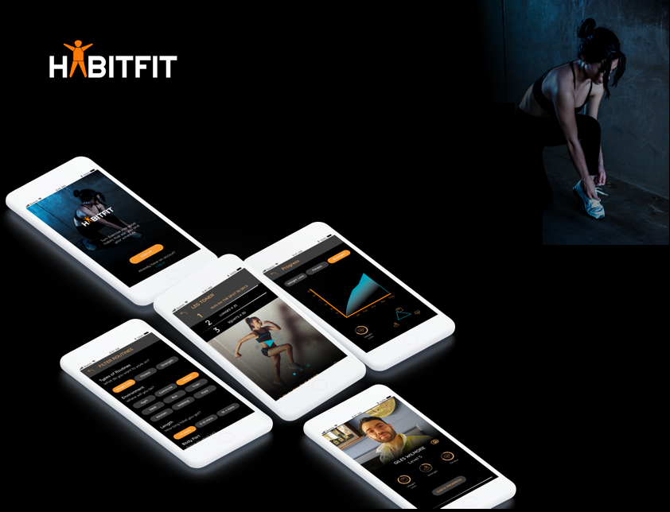
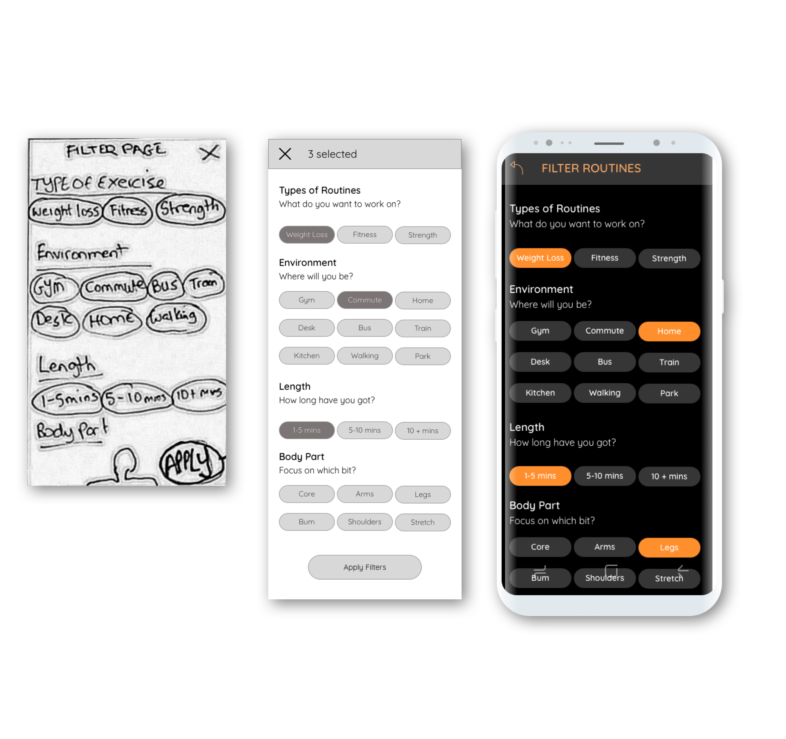
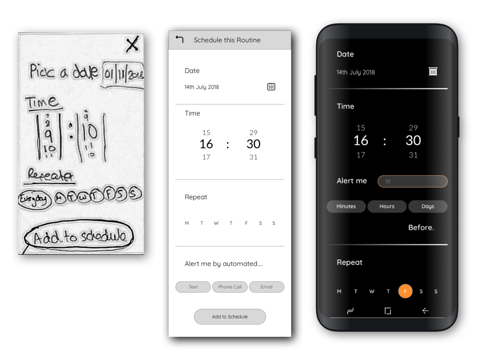
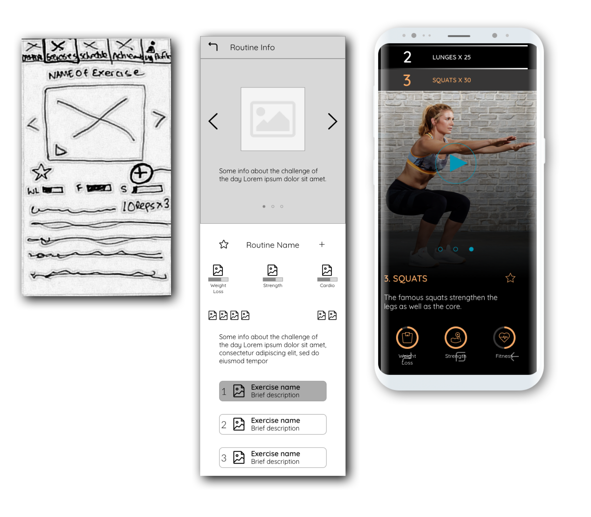
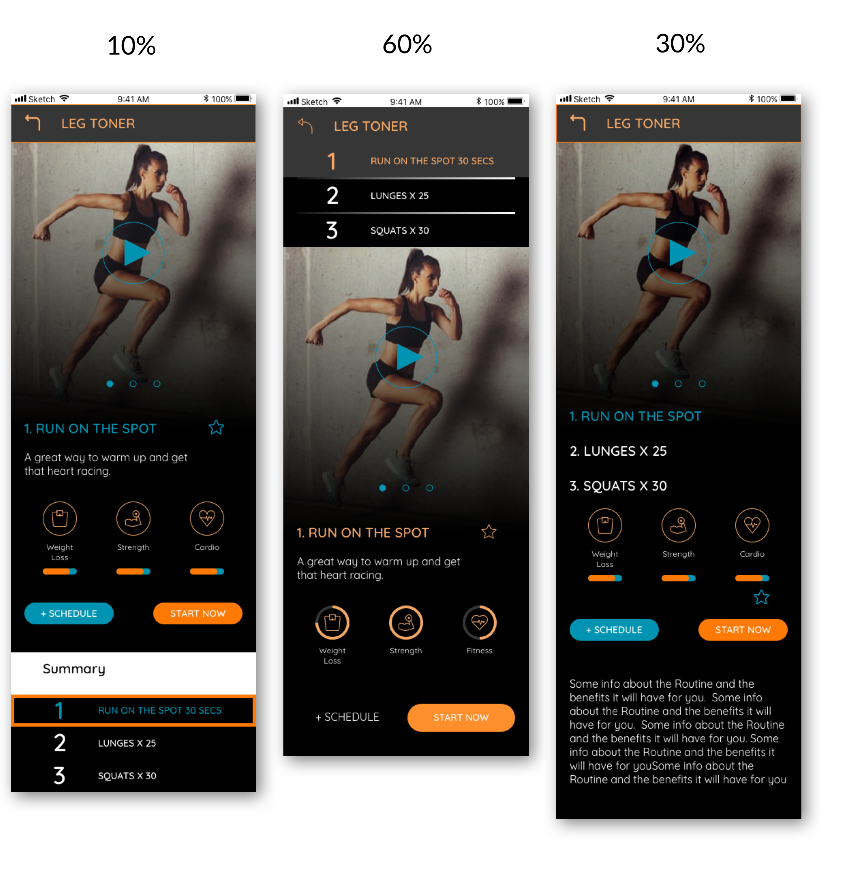
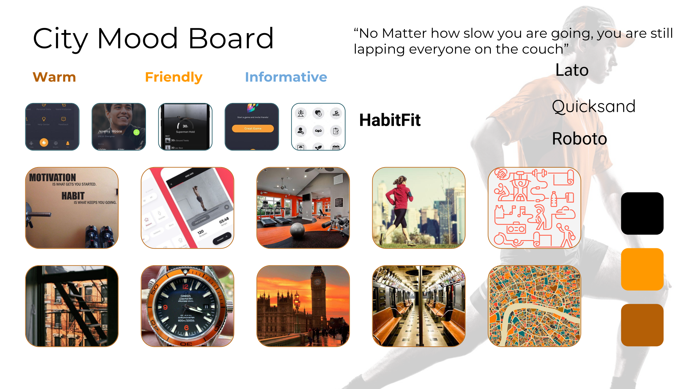
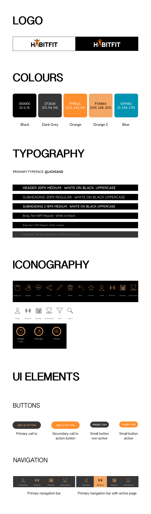
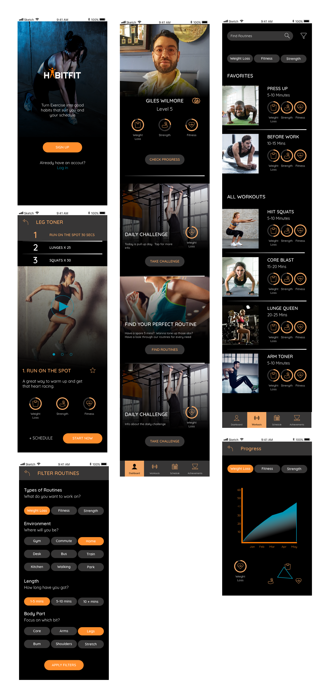
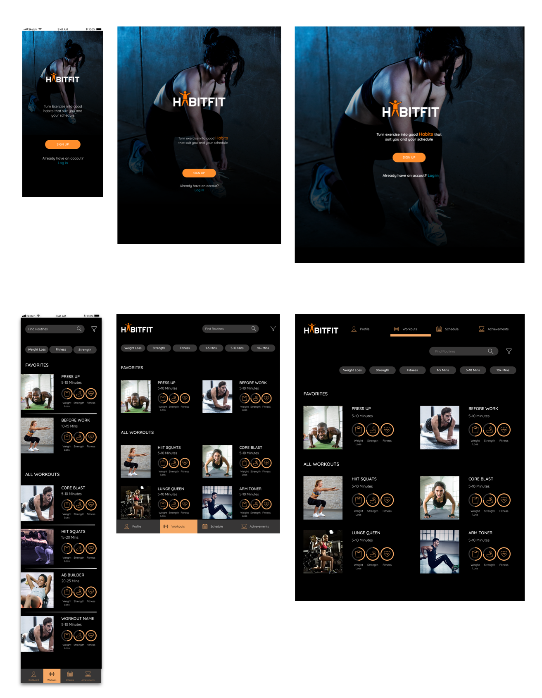

HabitFit

OVERVIEW
With the working world caught up in busy lifestyles and constant modern distractions, exercising and keeping healthy can sometimes be pushed to the bottom of the list of “things to do”. Motivating yourself to exercise can be difficult. Keeping up a regular routine of exercise even harder. HabitFit is a responsive web app that aims to motivate people into an exercise routine that suits their level, schedule and interest
THE CHALLENGE
To design a responsive web app where users can search and view routines, guides, daily challenges, and other information on any device. They can also keep a schedule by adding sessions to their personal calendar
MY ROLE
This project required me to focus on the UI design of the web app. Much of the UX research had already been done which would provide me the basis for all decisions made when designing the product. My experience in UX design meant that I was constantly engaging with potential users and referring back to the user research already done.
PROCESS & INSIGHT
The approach taken with this project is User-Centred Design. Armed with our Primary persona (Rebecca a 26 year old software developer) and a bunch of user stories generated from the user research, I now needed to get some ideas down on paper. The user stories dictated the features and flow of the web app. Paper wireframes meant that I could make quick changes and circulate ideas that would provide the most intuitive flow for our users. Once I was confident with these paper screens, it was time to step up my game and get these ideas on sketch into mid fidelity wireframes. Syncing my sketch file with inVision meant that I could constantly test HabitFit's flow with potential users.
“As a user, I want to be able to search and filter exercise videos (based on type, length, etc.), so that I can find workouts that suit me”.

The filter option allows users to select filters from categories such as type of workout and length helping users to choose the workout thats right for them. Selected filters are visible by using the accent colour.

A simple way to add workouts to a busy schedule. This schedule page can be accessed straight from the workout page

On this page, our user can see which step of the workout they are currently on. There is also a video to show how the exercise is done as well as view ratings for how effective the workout is for weight loss, strength or fitness.
PREFERENCE TESTING
On our workout info page, our users need to see each step of the workout and also be able to watch an instructional video of that step. I knew what information needed to be on the page, I just wanted to find out which layout would make the most sense to the users. So I did a preferential test with the following screens, asking users to vote on which screen they thought made the most sense to them. The Results (below) showed that having the workout steps at the top of the screen made most sense to the test participants.
MOOD BOARD
It was important to have a visual direction locked in early in the project as this would shape the design and character of the web app
STYLE GUIDE

MOBILE SCREENS

RESPONSIVE SCREENS
